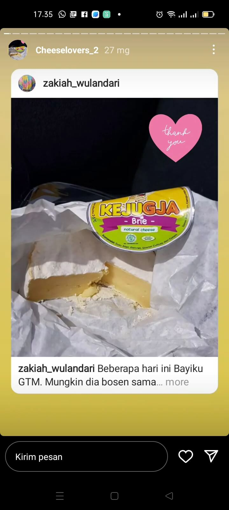
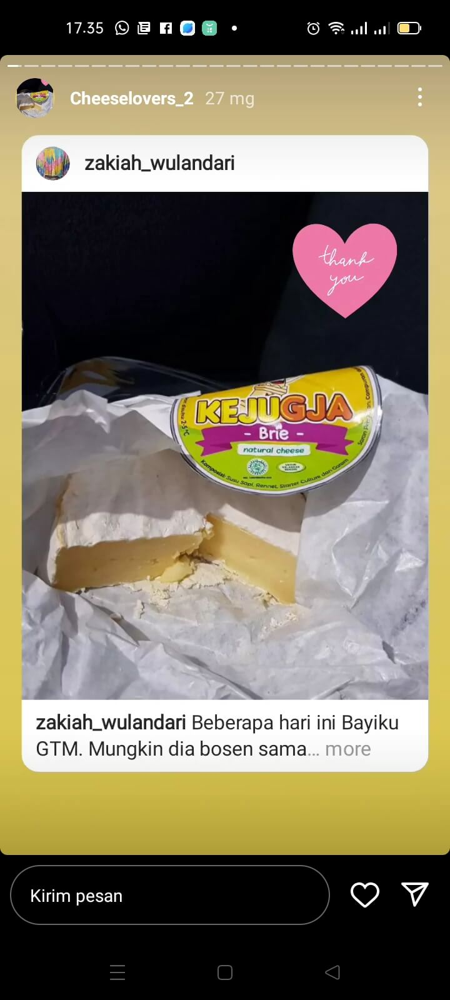

kejugja
artisan-cheese

Produk Kejugja menerapkan konsep circular economy dan memertahankan sepuluh core values demi menjaga kelangsungan alam untuk generasi masa depan yang sustainable, inovatif dan edukatif.
Testimoni
 
